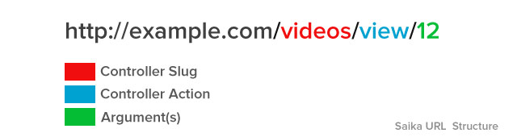

How Saika Works
Warning
In this document, we assume you are a PHP newbie. The way this document describe Saika may offend you if you are a PHP expert.
The Old Days
Remember the old days when you used to create PHP files for each and every page? Then rewriting the URLs? Also, including libraries and other codes on them again and again... and again. Well, if you do remember, just forget it and move on with Saika.
The URL Structure

http://example.com/<controller_slug>/<action>/<argument>
Saika's URL-path translates directly to the controllers. Controllers need to be placed in app/controllers directory. Controllers are an extended class of Saika's core Controller class. You can learn more about it in the class reference section.
Let's see a quick example.
http://example.com/videos
Now, whenever you request this URL. Saika will look for a controller named "VideosController.php" in app/controllers/ folder and will call the index() method.
Note
Look at the controller file name, it took "videos" as the controller slug and looked for a file named "VideosController.php". That's because Saika follows the PSR standard for naming.
Now let's take a look at another example.
http://example.com/videos/latest
For this request, Saika will look for the method named latest() in controller class VideosController.php and call it.
Next, let's see how to pass arguments. This time the URL is:
http://example.com/videos/view/123
As you may have guessed, like previous examples, for this URL Saika will call the method named view() and pass 123 as a parameter to it.
You can also pass multiple arguments at the same way.
http://example.com/videos/check/123/Lorem-Ipsum-Dolor
But what about the homepage then? That's where the default controller configuration comes handy! By default $_config['DEFAULT_CONTROLLER'] is set to index. That means for the homepage Saika will call index() method of the "IndexController.php" file.
Tip
You can change the default controller and method call via configuration.
Now, let's look at the code of the Controller.
<?php class VideosController extends Controller { /** * Construct this object by extending the base Controller class */ public function __construct() { parent::__construct(); } public function latest() { echo "This is the latest video page."; } public function view($id) { echo 'You asked for video ID' . (int)$id; } public function check($id, $name) { } }
Autoloading
Saika uses composer ( see http://getcomposer.org ) to autoload stuffs. So, if you follow PSR-4 naming standards; your models and other libraries will be autoloaded as soon as you call them.